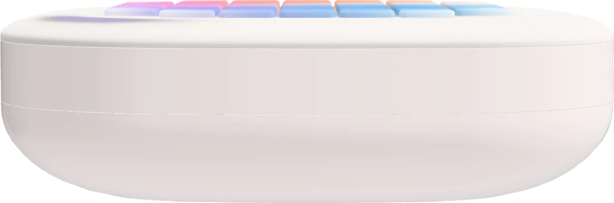

축제를 좋아하고, 늘 축제 소식을 챙긴다
→ AI: 라인업 공개! 푸드트럭 위치 안내!
지금의 나를, 손끝으로
AI는 어제의 나를 기억합니다. Knoble은 지금 원하는 상태를 손끝으로 전하고, AI가 그 의도에 맞춰 돕게 하는 손바닥만 한 오프라인 AI 기기예요.
패드를 누른 채 움직여 보세요
AI는 어제의 나를 기억합니다. 하지만 오늘의 나는, 한 시간 전의 나와도 다를 수 있어요. 그래서 Knoble은 묻지 않고, 손끝으로 듣습니다.
2030년, 작은 MCU 기반 AI가 일상이 되었어요. 개인 AI는 지난 경험과 반복된 행동으로 판단하지만, 기록만으로는 지금의 의도를 알 수 없어요.
→ AI: 라인업 공개! 푸드트럭 위치 안내!
→ 필요한 것: 조용한 한 시간
축제를 운영해 본 적이 있다는 이유로, 즐기러 온 날에도 AI가 운영 점검과 부스 안내를 반복해요.
같은 사람이라도 오후엔 마감에 쫓기고, 저녁엔 놀고 싶고, 밤엔 쉬고 싶어요. 반복 행동은 그 변화를 따라가지 못해요.
기기가 다 해 주니까 확실히 편하긴 한데, 직접 발견하는 재미도 잃고 싶지 않아.
축제를 즐겨 본 적도, 운영해 본 적도, 준비해 본 적도 있어서 축제를 조금 다르게 봐요. 새로운 기술에 거부감은 없지만, 기기가 선택을 너무 대신하는 것에는 부담을 느껴요.
스크롤하면 하루가 시작돼요. 영상 속 기기를 직접 조작해 보세요.
같은 AI가 도윤이 그린 위치에 따라 다가가기도, 물러나기도 했어요.
카드 속 패드를 직접 눌러 보세요.
업무↔오락, 휴식↔활동 두 축 위에 45칸. 네 모드 중 하나가 아니라 위치로 조합과 강도를 전해요. 모서리 4칸을 비워 입력 영역이 원에 가까워요.
마지막 위치뿐 아니라 지나간 경로, 머문 시간, 방향을 바꾼 망설임까지 읽어요. 마음을 단정하는 근거가 아니라, 의도를 더 신중하게 추정하는 단서로만 써요.
마감이 가까운데 오락 쪽을 고르면, AI가 업무 쪽 칸을 보랏빛으로 제안해요. 사용자는 두 빛을 비교하고 직접 결정해요. 오른쪽 칸을 눌러 보세요.
마감, 과제, 몰입이 필요한 순간이에요.
원하는 상태 위치의 패드를 눌러요. 중앙에서 멀수록 그 성향이 강해요.
손을 떼지 않고 쓸어 위치를 옮겨요. 지나간 칸에 빛의 궤적이 남아요.
AI가 다른 빛으로 제안하면, 내 위치와 제안을 나란히 비교해요.
손을 떼거나 꾹 누르면 확정. 최종 지점이 가장 밝게 숨 쉬어요.
돌려 보고, 분해해 보고, 빛을 켜고 그려 보세요. 점을 누르면 부품 설명이 나와요.
4.4mm 젖빛 반투명 키캡. 정전식으로 터치와 경로를 감지하고, 0.5mm 눌려 확정 입력을 받아요.
드래그해서 돌리기 · 휠/핀치로 확대
복잡한 화면이나 긴 설명 대신, 부드러운 곡면과 오팔빛 화이트, 반투명 패드 안에서 퍼지는 파스텔 빛으로 대화해요.


아니에요. 경로와 머문 시간은 마음을 단정하는 근거가 아니라, 의도를 더 신중하게 추정하기 위한 단서예요. 최종 상태는 언제나 사용자가 손을 떼는 위치로 정해져요.
그대로 존중해요. 제안의 빛은 조용히 사라지고, 미룬 일은 사용자가 정한 때(예: 다음 날 아침)에 다시 알려 줘요.
빛으로 알려 줘요. 지나간 경로는 시간 순으로, 최종 지점은 가장 밝게 숨 쉬듯, AI 제안은 보랏빛으로 깜빡여요. 테두리 빛점은 방향을 보여 줘요.
어디로도 가지 않아요. 기기 안의 MCU에서 바로 처리하는 오프라인 AI라서, 입력과 판단 기록이 외부 서버로 전송되지 않아요.
사람의 상태는 딱 넷으로 나뉘지 않아요. 업무와 활동 사이, 휴식에 가까운 오락처럼 조합과 정도가 있어서, 45칸의 위치로 세밀하게 전하도록 했어요.